If you want to familiarize yourself with the app before you start creating and organizing your own tracks, you can switch to demo mode in the Settings page. This will populate the app with demo data that includes photos, GPX files, and is fully functional. You can add new tracks, edit or delete existing ones, edit the GPX files, create and use views, etc. This data can be easily restored to its initial state also in the Settings page.
You can switch between demo and live data at any time; any changes previously made to the demo data will be preserved while you are in live mode. The mode (demo or live) is displayed at the bottom of the Track page.
Navigation
The main page is the Tracks page, also known as the Home page, which shows a view of your tracks. Here you can select one or more tracks. In the other pages, you can access other general functionality, or functions specific to the track or tracks that you selected:
New track: create a new track
Track details: view the details of the first selected track
Photos: view the pictures associated with all selected tracks
Profiles: view the distance/time and elevation profiles of the selected track(s). The selected tracks must have elevation data in the GPX file.
Map: view the selected track(s) overlayed on a map. The selected track(s) must have coordinate data in the GPX file.
Collections: view the list of all collections, or the list of collections that include the selected track(s)
History: view the performance data for the selected tracks over time (for example, distance by week)
Planner: available only when a planned track is selected. Provides functionality to estimate the time needed for the planned track
Compare tracks: view the performance data for the selected tracks in a table, easy to compare
GPX data: provides functionality to edit the GPX file associated with the first selected track
Edit tracks: update data on all selected tracks
Views: create and manage views
Help: access this help page; there is one section for each of the pages
Settings: configure TrackExplorer's settings
How to organize data
TrackExplorer accesses two types of data: GPX files and images. Completed tracks can only have one GPX file. Planned tracks can have multiple GPX files. Both types of track can have multiple image files.
GPX files
GPX files for completed tracks can be organized in any way; the simplest is to store all of them in the same folder, but you can also create different folders by activity, year, location, etc. GPX files for planned tracks must be organized in the same folder. This folder may be placed inside one of the general GPX folders described above.
Image files
When you create or edit a track, you may select a hero image. The location of the hero image lets TrackExplorer know where to look for the images to display in the Photos and Map pages. Generally, you would want to save all images related to a track in the same folder.
If you have multiple tracks that are closely related to each other (for example recorded on the same day during the same excursion), you may want to place all of them in the same folder. This way, when you select a single track and navigate to the Photos page, or display the images on the Map page, you can see all images at the same time. The Photos and Map pages will display all images from the folder where the hero image is located, as well as all its subfolders.
Changing the folder structure
You should decide a folder structure that makes sense to you before you get too far. However, if you need to change it when you already have several tracks, you can use the functionality in the Edit tracks page to mass-update the hero image and GPX file path on multiple tracks at the same time.
Special functionality
Functions marked with the BETA icon are in pre-release status; the functionality may not be complete and there may be bugs.
Functions marked with the EXT icon depend on external services. The availability of these services may change or disappear over time.
Sharing BETA
The sharing functionality is based on creating sharable content (image files or web pages), and saving it on your PC or uploading it to the Netlify hosting service. If you choose the option to save the content to your device, you can then upload it, publish it or share it as you wish. If you choose to upload to Netlify, you can share links to the pages directly from TrackExplorer. In order to use functionality related to Netlify, you will need to enter your site id and access token in the Settings page.
You can access sharing functionality from the following areas:
Details page: create a web page with data related to the selected track, then save it on your PC or upload it to Netlify.
Tracks page: create a web page for all selected tracks, then save it on your PC or upload it to Netlify; or share a link to any page that you already uploaded to Netlify.
Profiles page: save the chart as an image on your PC.
Map page: save the map as an image on your PC.
This functionality is in beta and is subject to changes in future releases.
Multiple devices
If you install TrackExplorer on multiple devices, you can access the saved files (images and gpx files) from all devices, as long as they have been saved in your OneDrive account. Even if OneDrive is on a different path in each machine, TrackExplorer will attempt to resolve the correct path.
Logging in
You can log in to TrackExplorer using a Microsoft account. This is required only to have access to the optional map types in the Map page. See more details in the Map page section below.
Help
Some pages display infoboxes with details about the available functionality. Each infobox will be displayed every time the page is open unless you uncheck the "Show this information again" checkbox. This can be changed in the settings page as well. The infoboxes can always be toggled open and closed with the info button in the navigation pane.
Glossary
Activity
The activity performed in the track. When you import a GPX file, TrackExplorer may prepopulate the value based on the corresponding tag of the file, but you can override it. The activity can be used to group and filter tracks. When you start typing in the activity field, TrackExplorer will make suggestions based on activities that you entered before.
Ascent
The total elevation climbed in the course of the track. If the track climbs 100, descends 50 and climbs again 100, the ascent value will be 200.
Ascent speed
The total ascent divided by the time spent ascending (each step in the GPX file is either ascending, descending or flat. Only the time related to ascending steps is counted for this calculation).
Collections
Use collections to connect different tracks. Once multiple tracks are connected, you can navigate from one track to the others (in the Details page), or you can view them all together in the Tracks page (using filters or special filters) or in the Collections page. The typical use is to associate multiple tracks that are part of the same trip or the same project (for example, you may have a planned track, a few failed attempts, and a successful attempt all related together). Collections can be created in the Details page or in the Tracks page.
Data is verified
This field indicates that the performance data has been verified by the user. Generally speaking, the data collected from the GPX file may have errors or imprecisions. If you correct and/or validate the data (manually or by using one of the techniques available in the GPX data page) you can mark it as verified. You can then be more confident in the values if you use them for example as a reference in the Planner page.
Date
The date when the track was recorded. Based on this date, TrackExplorer automatically determines the season, the ski season and the year, which can be used to group tracks (for example using colors in the Tracks or Map pages).
Descent
The total elevation descended in the course of the track. If the track descends 100, climbs 50 and descends again 100, the descent value will be 200.
Descent speed
The total descent divided by the time spent descending (each step in the GPX file is either ascending, descending or flat. Only the time related to descending steps is counted for this calculation).
Description
A description of the track.
Distance
Four values are calculated and displayed: total, ascending, descending and flat distance. The total distance is always equal to the sum of the others. These values can be edited in the Details page if needed.
Elevation gain
The difference between ascent and descent.
Elevation range
The range between the lowest and highest elevation on the track. Depending on the page, it may be displayed as both the low and high elevations (e.g. 700-1000) or just with the difference between them (e.g. 300).
Gear
The equipment used for the track. For example, for skiing activities this could be the type/model of skis; for biking activities, it could be the type/model of bicycle. Use slashes to create a tree structure: for example, entering the gear as Bike/Mountain/Yeti SB130 will create three nested levels. You will then be able to easily filter for all mountain bikes or all bikes. The gear can be used to group and filter tracks. When you start typing in the gear field, TrackExplorer will make suggestions based on gear that you entered before. You can also use the Gear button to open a navigation tree based on the existing gear structure.
Laps/runs
The number of laps or runs, depending on the activity. For example for skiing, this number could represent the number of runs skied. For track running, this could be the number of laps completed.
Hero image
This is the main image associated with a track. It's displayed in the Details page, as well as the Tracks page. The Photos page displays all image files contained in the same folder where the hero image is found. Therefore, we recommend to place all pictures related to a track in the same folder, and to select the hero image from that folder.
Link
Use links to associate additional information to a track. For example, link online reviews, maps or pictures for a trail. This is particularly useful for planned tracks, when you are trying to make sense of multiple sources of information. You can create and view links in the Details page.
Location
The area where the track is. Use slashes to create a tree structure: for example, entering a location as USA/Colorado/Keystone will create three nested levels. You will then be able to easily filter for example all locations within Colorado or within the USA. The location can be used to group and filter tracks. When you start typing in the location field, TrackExplorer will make suggestions based on locations that you entered before. You can also use the Location button to open a navigation tree based on the existing location structure.
Munter rate
The Munter calculation can be used to estimate the time that it takes to complete a track. The formula is as follows: Hours = (distance + ascent / 100) / rate. The distance is expressed in Km and the ascent in m. The rate varies depending on the activity, terrain features, difficulty, etc. The rate can vary for example from 2 for hiking off trail, to 10 for skiing downhill. For a track with known time, distance and elevation, TrackExplorer reverse calculates four rates - a total rate for the entire track, and separate rates for the uphill, downhill and flat sections. These calculated rates can be used to compare the difficulty of similar activities and tracks, and to estimate the time of planned tracks. See the Planner page for more details and applications.
People
The list of people who participated in the activity. If used consistently across different tracks, they can be used to group tracks, for example in filters or with different colors in the Map page. When grouping tracks by people in the Map page, you have two options: one is to group all tracks that have exactly the same people; the other is to group tracks based on whether they have or don't have a specific person (for example, grouping all tracks with person "Alice", regardless of what the other people are).
Performance data
This refers to a set of values calculated from a GPX file: distance (uphill, downhill, flat, and total); time (uphill, downhill, flat, and total); ascent and descent; the corresponding speeds; the Munter rates (uphill, downhill, flat, and total); and the minimum and maximum elevations, and elevation range. When you edit the GPX file you have the option to update these values based on the edited file, or leave them as they were originally. This data is displayed or used in the Tracks, New track, Details, History, Planner, Compare tracks, Edit tracks, and Views pages.
Related tracks
See Collections above
Season
Based on the date of the track, TrackExplorer assigns a season automatically, using the following dates: Spring starting on March 20, Summer starting on June 21, Fall starting on September 22 and Winter starting on December 21. The seasons are reversed if the GPX file indicates that the track was recorded in the southern hemisphere, based on its starting point. These dates may not be accurate for every year, but you have the option to set the season manually when you create or edit a track.
Ski season
Used to group tracks (for example displaying them with different colors in the Tracks or Map pages). The typical use is for skiing (in the northern hemisphere) or other activities that have a natural season spanning different seasons and years. For example, if you want tracks in December 2024, January 2025 and April 2025 to all be in the same group, you wouldn't be able to do it using the Season or Year fields, but you can using the Ski season field. The beginning of the ski season (by default September 1) can be defined in the Settings page.
Speed
TrackExplorer calculates two types of speeds: Distance speeds (km/h or mph) with separate values for uphill, downhill, flat sections and total; and Elevation speeds (m/h or ft/h) with separate values for ascent and descent. These values are calculated based on distance, ascent/descent, and times; they cannot be edited.
Status (Planned vs. Completed)
The status of each track can be either "Planned" or "Completed". A planned track is a track that you haven't done yet, but you are researching and planning out. You may have in mind different alternative routes, or different segments, that you have planned out in software such as Caltopo. For this purpose, TrackExplorer allows you to import multiple GPX files into the same track. Planned tracks can then be estimated in the Planner page. Completed tracks are tracks that have already been done. You can associate a single GPX file to each completed track. If you want to connect multiple completed tracks to each other (perhaps because they are part of the same trip), you can achieve that using collections. You can use collections also to connect a completed track to the original planned track.
Tags
A series of words associated to a track and used to describe it. If used consistently across different tracks, they can be used to group tracks, for example in filters or with different colors in the Map page. When grouping tracks by tag in the Map page, you have two options: one is to group all tracks that have exactly the same tags; the other is to group tracks based on whether they have or don't have a specific tag.
Time
Four values are calculated and displayed: total, ascending, descending and flat time. The total time is always equal to the sum of the others. These values can be edited in the Details page if needed.
Units of measurement
Track data can be displayed using either the US Customary System (miles and feet) or the Metric system (kilometers and meters). You can select which system to use in the Tracks page; the selection then applies to all other pages.
By default, TrackExplorer uses US Customary units if your Windows user's language setting is US English, and Metric units otherwise.
Miles and kilometers (for both distances and speeds) are always rounded to the closest second decimal. Feet and meters (for both distances and speeds) are always rounded to the closest integer.
Because of the rounding rules used in the calculations, when you switch systems you may see small differences in some values. For example, if you create a track with US Customary and display it in Metric, some of the values may be slightly different from those that you would have seen had you created the track directly in Metric.
Valid elevation data
The track is associated with a GPX file that contains valid elevation data that can be displayed in the Profiles page.
Valid map data
The track is associated with a GPX file that contains valid coordinates that can be displayed on a map.
Tracks page
Overview
This is the main page of the app. It shows the list of all tracks (or if you have a view selected, only the tracks included in that view). You can select one or more tracks, perform functions on the selected tracks in this page, or navigate to other pages for additional functionality. Along the top of the window there are buttons that allow you to customize the appearance of the page and manage the selected tracks.
Buttons and functions
Home
Returns to the default view. If no view has been set as default, it shows all tracks.
Views
Shows a tree view of all views that have been created. You can select one and the page will only show the tracks included in that view. The name of the selected view is shown at the bottom of the screen, along with the number of tracks included in the view.
Back
Returns to the previously selected view.
Quick search
Type the search text and press enter. A new quick filter is automatically created based on the search text. The quick filter is not saved in Filters, but it is included in the filter history (Back button). The quick filter will match tracks that include the search text in any of their fields, but some special criteria are available:
Dates
If the search text can be interpreted as a date, the search will find all tracks that match the date. However, if the search text can be interpreted as a date but you want it to be used as text, use the + symbol at the beginning of the text. For example:
Search text
Result
11/1/2024
All tracks with a date of November 1, 2024. The date format is based on your system localization settings.
2024
All tracks from any date in 2024
November
All tracks from any day in November of any year. The name of the month is based on your system language.
November 2024
All tracks from November 2024. The name of the month is based on your system language.
November 1
All tracks from November 1 of any year. The name of the month is based on your system language.
+ April
All tracks that contain the word "April", instead of all tracks with a date in April of any year. Useful for example if you are looking for tracks that involve a person named April.
Numeric values
If the search text can be interpreted as a field name with a range of values, the search will find all tracks that match the range for that field. For example:
Search text
Result
Munter = :7
All tracks with a Munter rate less than 7
Distance = 15:
All tracks with a distance greater than 15 (in the selected unit of measure)
Speed = 5:10
All tracks with a speed between 5 and 10 (in the selected unit of measure)
Ascent = 1000
All tracks with an ascent value of exactly 1000 (in the selected unit of measure)
Hours = 2.5:
All tracks with a time over two and a half hours. The same could be achieved with "Minutes = 150:"
+ Distance = 15
All tracks that contain the text "Distance = 15", instead of all tracks with a distance of exactly 15.
The available field names for this functionality are: Distance, Ascent, Descent, Speed, Munter, Minutes and Hours.
Special views
Apply a quick temporary view that finds tracks similar in some way to the selected one - related tracks, same activity, gear, location, people, or tags. The quick filter is not saved in Filters, but it is included in the filter history (Back button).
View all
Removes the currently selected view and displays all tracks.
Sort
Sort the displayed tracks by a specific field. This overrides the selected view's default sorting, if any.
Select
Change the track selection: press the button to select all tracks; if all tracks are already selected, press it to unselect. The number of selected tracks is displayed at the bottom of the screen.
Collect
Add all selected tracks to an existing or new collection.
Delete
Delete all selected tracks.
Totals
Displays a dialog with the total and average distances, times, elevations, and speeds for all selected tracks.
Images
Select how the tracks are displayed: small, medium, or large images together with data fields; only data fields with no images; larger images with no data fields. This selection overrides the default image size defined in the view, if any. The selected image size is displayed at the bottom of the screen.
Data fields
Select the field that you want to see displayed along with the images. The selections you make apply to the currently selected image size. You can make different selections for each image size. The selected fields are remembered only until you close the app, unless you save them. In the Settings page, you have the option to revert to the default fields.
Colors
Select the field by which you want to set the background color of the tiles. TrackExplorer selects the colors that are most differentiating, given the number of values for the selected field. This selection overrides the setting defined in the view, if any. The selected field is displayed at the bottom of the screen, along with a legend with the meaning of each color.
Units
Select the system of units used to display the performance data. Choose between the US Customary System and the Metric system. The default system is based on the Windows language settings (USCS is used for the en-US language, Metric for all other languages). The selected system is used in all pages of the app, not only the Tracks page. The selected system is displayed at the bottom of the screen.
Account
Log in or out of your Microsoft account. This is required in order to have access to the optional map types. See the help for the Maps page for more details.
Tutorial
Start the tutorial that shows one by one the features available in the Tracks page.
Support
If you like TrackExplorer, consider supporting its future development ❤️
New track page
To create a new track, select the track status first - if it's a track that you already completed, select Complete and pick a single GPX file to represent the track. If you have multiple files, you may combine them later in the Edit GPX page. If it's a planned track, select Planned and you will be able to select a whole folder where you may have multiple GPX files for different sections or alternative routes. You can then pick one of these files to use for the performance data and the map.
Then enter the track information: Name, Description, Date (populated by default from the GPX file data, if available), Season (automatically calculated from the date), Location, Activity (populated by default from the GPX file data, if available), Gear, People, and Tags.
Location and gear can be set up with a hierarchical structure, each node being separated by a / symbol. Start with the most encompassing entity: for example "USA/California/Yosemite" for the location or "Bike/MTB/Cross-country" for the gear. Once you set up the hierarchical structure, you can navigate it on a tree using the World/Gear icons to select an existing value.
Then select the Hero image file. The selected image will be shown to represent the track in several pages, including the Tracks page. When navigating to the Photos page for the track, TrackExplorer will display all images from the same folder of the hero image (including all subfolders). Therefore, it makes sense to place all and only the images related to an individual track in the same folder. TrackExplorer supports multiple image formats, but jpeg is preferred for performance. If you don't select an image, TrackExplorer will use a default placeholder. If you prefer, you can press the "Use map" button to generate an image from the track's map. The image file will be saved in the app folder.
You can then populate some other fields: Laps/runs (representing the number of laps or runs completed in the track), Custom fields 1-3 (these fields can be used for any purpose; the labels and data types can be configured in the Settings page), and Custom field 4 (this field can also be used for any purpose, but it can only be text). The custom fields must be enabled in the Settings page before they can be used.
The values in the location, activity, gear, people, tags, and custom fields will be saved and presented for quick selection the next time a new track is created.
Depending on the data that is available in the GPX file, it may or may not be possible to display the track in the Map or Profiles page. This is indicated by the Valid map data and Valid elevation data checkboxes. These checkboxes are set automatically and can't be changed.
When ready, use the Save button to save the track and go back to the Tracks page, the Save & new button to save the track and start creating a new one, or the Discard button to go back to the Tracks page without saving the new track. When saving, check the Replace current selection checkbox to replace the currently selected track(s) with the newly created one.
Track details page
View and edit a track's data. All the fields outlined in the New track page help section are also available in the Track details page. Additionally, you have options to recalculate some or all of the performance data from the GPX file, manage links to outside resources, and manage relationships to other tracks (collections).
Use the Links section to create connections to web pages that contain information relevant for the track, for example trip reports, maps, pictures, etc.
Use the Related tracks section to add the track to one or more collections and view all tracks in the same collections. You can use this for example if you have multiple tracks for the same trip and you want to keep them connected so they are easier to find.
Photos page
Displays all photos for the selected tracks. Each track is associated with a hero image. The photos displayed in this page are all photos found in the same folder as the hero image.
You have different options for how the photos should be displayed:
Gallery: all photos in the same page
Slideshow: one photo at a time
Open the first folder: opens Windows Explorer with the path of the first folder for the selected track(s)
Profiles page
Display the elevation data of the selected track(s) in a chart.
Options
All of the options listed below can be set as predefined values in a view. When you open the Profiles page from a view, the options will be set accordingly.
Chart type
The chart type determines what are the values shown on the X and Y axis of the chart. The options are: Elevation by distance, Cumulative elevation gain by distance, Distance by time, Elevation by time, Cumulative elevation gain by time, and Time by distance.
Elevation display
Sets the range of the elevation axis as follows:
Absolute from 0: the chart starts at elevation 0, regardless of the track
Absolute from lowest point: the chart starts at the lowest point of all selected tracks; this is useful to zoom in on the elevation differences
Relative: all tracks start at the same point in the chart; this is useful to focus on the elevation gain rather than the absolute elevation when comparing tracks
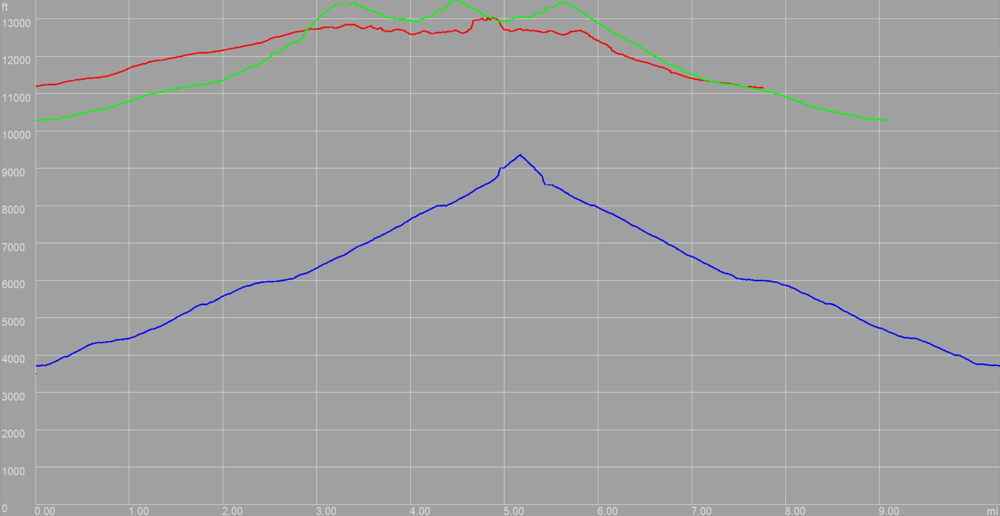
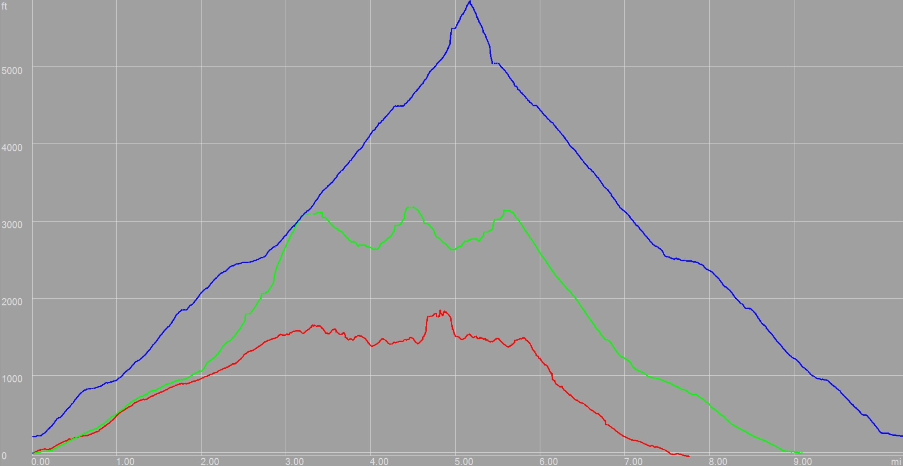
Absolute from 0: the chart starts at elevation 0 and each track is displayed at its actual elevation
1 / 3
Other options
The other available options are self-explanatory: Background color, Plot line thickness, Display grid lines, Gridline intervals for distances/elevations/time, Font size for labels, Gridline color, and Gridline thickness.
Legend
Each different track is displayed in a different color. The legend shows the association between the colors and the track names.
3rd dimension
The chart can work with distance, elevation and time. Each axis can show one of them, which means that the third one is not visible. If you want to see some information about the 3rd dimension, you can use the slider to find specific points along that dimension, and they will be displayed as points on the chart.
In the example below, the chart (Elevation by Distance) shows the distance on the x axis and the elevation on the y axis. In this case, the 3rd dimension is time. The slider was placed at 112 minutes. The three dots show the 112 minute point for each track - this shows that the blue track was much faster than the others, at least up to this point.
Share
Use this button to save a copy of the chart exactly as displayed on the screen. The image is saved in JPEG format with the same resolution as the screen where it's displayed. For best results, make sure that the window is on a larger screen.
Other features
Right-click on any point in the chart to display the axis values at that point.
Map page
Displays all selected tracks on the map. The map is automatically zoomed to fit all tracks in the same view.
Show tools
Toggle the menus on and off, so you can focus on the map when the tools are not needed.
Navigation
Use these buttons to navigate in the map (but you can also use the mouse or touchscreen). The buttons allow you to pan in all directions (up, down, left, right), zoom in and zoom out.
Options
Map type EXT
The style of the background map on which the tracks are drawn. These map types rely on external providers. They may not all be available at all times - over time, some map types may be discontinued, and new map types may be added.
Some of the map types (Azure Maps, Bing Maps, and Thunderforest maps) can be accessed only if you are logged in to your Microsoft account. Press "Account > Log in" in the home page to do so.
You can enable Stadia maps (Alidade Smooth, Alidade Smooth Dark, Outdoors, and Stamen Terrain) using your own account: go to stadiamaps.com, sign up or log in, and obtain your API key under "Manage properties & authentication". Then, enter your API key in the TrackExplorer settings. Your Stadia account may be subject to charges for your usage within the app.
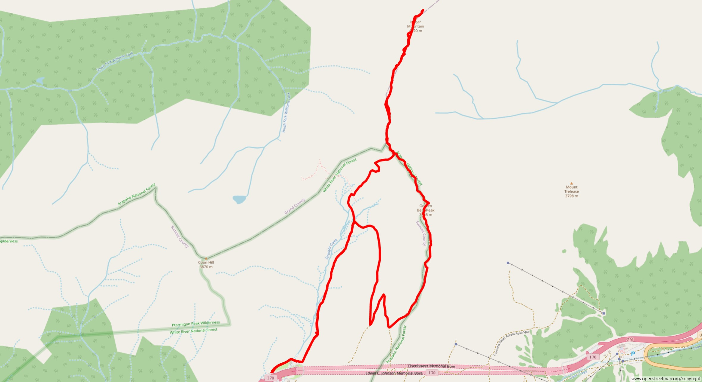
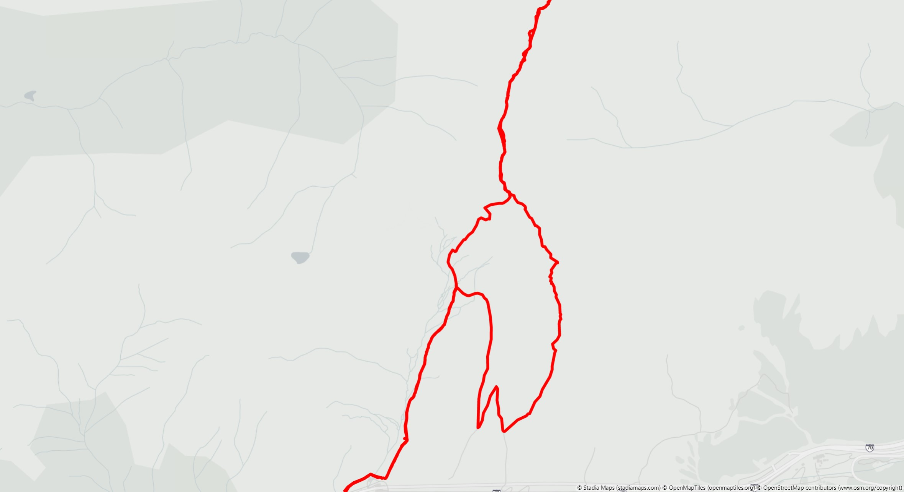
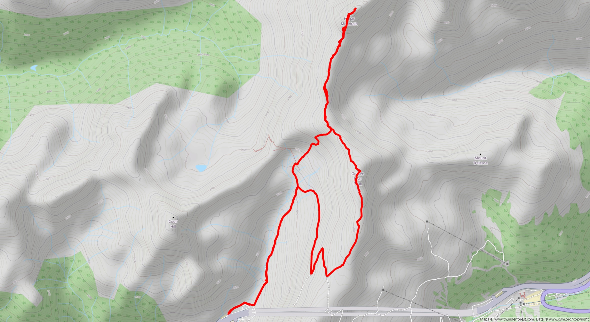
Bing Aerial
1 / 14
Line thickness
Thickness of the track line, expressed in pixels.
Labels by
Content of the label displayed on each track. Select None to hide the labels, otherwise select the data field that you are interested in.
Color by
Each track is drawn in a color representing the value of the selected data field.
Color opacity
Select the opacity of the track line, in decimal numbers from 0 (transparent) to 1 (fully opaque). This is useful when you have multiple overlapping tracks selected, and you want to display a heat map of the most travelled areas.
Fixed color
If Color by is Fixed, click on this rectangle to select the fixed color you want to use.
Group by
When the selected data field is either People or Tag, you have the additional option to group the colors by "Each combination" or "Specific item". The former will draw each combination of different tags or people in a different color. The latter will only use two colors - one for tracks that contain the selected specific item, one for all other tracks.
For example, suppose 3 tracks with the following tags, respectively: A and B; A and C; B and C. The "Each combination" option will draw all tracks in different colors, because each track has a different set of tags. The "Specific item" option, for example with A selected, will draw two tracks in one color (the ones that have tag A) and the other in a different color (the one that doesnt have A).
Specific item
If you selected Group by = Specific item, use this field to select the item in question.
Invert the color of the latest track
When this is checked, the most recent track will be highlighted by using the opposite color as the others (for example, cyan vs. red). This is useful if you did multiple tracks in the same area and you want to easily identify at a glance the last one you did.
Arrange tracks
With multiple overlapping tracks, by default the newest one is shown in front of the others. You can reverse this using the "Arrange tracks" toggle. Tracks with the same date are sorted by an internal identifier that keeps the sorting consistent when the order is reversed.
Live drawing
When this is checked, any option changes are immediately applied to the map. Otherwise, the changes are applied only after the Draw button is pressed. Turn live drawing off to improve performance when you have many tracks on the same map and you are tweaking multiple options.
Show tracks
When multiple tracks are selected, use this section to show (select) or hide (deselect) individual tracks. This is useful if some tracks are overlapping and you want to focus on one or more specific ones. Press the Show all button to quickly display all tracks again.
Markers
Use the sliders to mark the cumulative time or distance along each track. Press the Clear markers button to hide the marker labels.
Photos
If the track has a hero image associated with it, TrackExplorer will look through all the photos in the same folder and show them on the map, in the place where they were taken. Only files that contain GPS coordinates are included. The photo locations can be marked by pins or labels with the name of the image. You can select the size and color of the pin. Click on a label or pin to display a preview of the image.
The coordinates are read from each image file each time the Photos expander is opened. Depending on your PC's performance and the number of pictures for a track, this may take several minutes. To avoid this, you can set "Save photo coordinates for the Map page" to On in the Settings page. With this setting on, TrackExplorer will save the coordinates to a separate file, which will make the process faster after the first time. The coordinates are saved in a text file in the same folder as the hero image of each track. Changing the setting to Off will not delete these files, but they will be ignored.
Share
Use this button to save a copy of the map exactly as displayed on the screen, but without the tools menus. The image is saved in JPEG format with the same resolution as the screen where it's displayed. For best results, make sure that the window is on a larger screen.
Examples
Below are some examples of the map functionality:
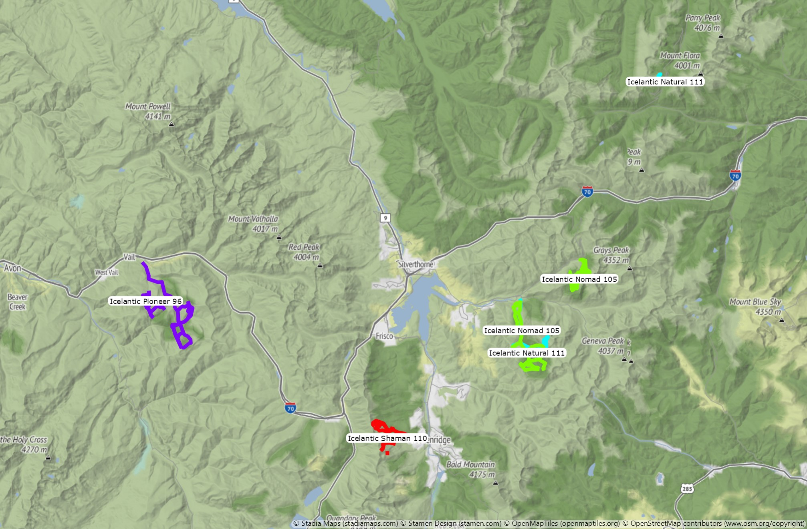
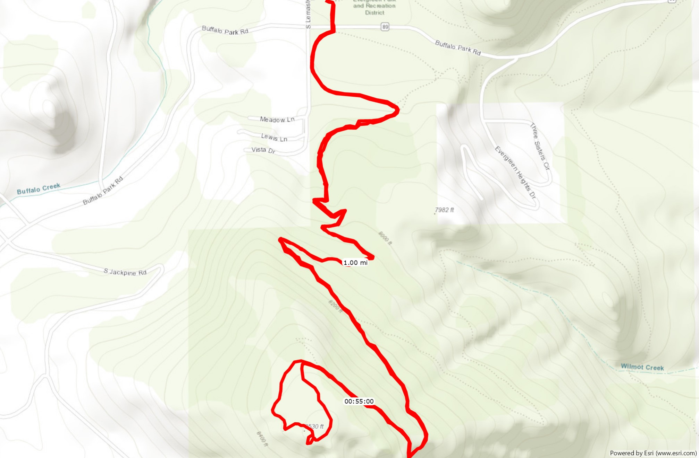
Multiple tracks with colors by track (each track in a different color)
1 / 6
Sharing page BETA
Access this page with one or more tracks selected, to generate web pages for those tracks that you can share in various ways. This functionality is in beta, it is limited and may change in future releases. It also depends on external services which may become unavailable in the future.
You can share content in two formats:
Single track page
This page contains the hero image, name, date, location, description and the main track details for the first selected track. You can optionally also include additional details, the map, the elevation profile, the links, and the GPX file of that track.
Multiple tracks page
This page contains the hero images, names, and main track details for each track. You can optionally include a map and elevation profile.
For either format, you can publish the content in two ways:
Locally on your PC
The files are saved in a folder of your choice. You are free to upload them to your own website, or share them in any other way.
Upload to Netlify EXT
This requires a Netlify account; you can enter the account information in the settings page. After you upload a page to Netlify, you will get a link that you can easily share through Windows.
Whenever you deploy a web page to Netlify, the files are saved to a sync folder. The whole sync folder is synced every time - this includes not only the newly created page, but also all the older ones. The last section in the Sharing page allows you to view the list of pages in the sync folder, create links to them, delete them, and sync the whole folder with Netlify. When you delete files from the sync folder, the corresponding files will also be deleted from Netlify as soon as you publish a page or manually sync the folder. This functionality depends on external parties and may change or become unavailable in the future.
See the Technical information section for more details.
Collections page
Collections are a way to group together different tracks, for example if they have a common theme or if they relate to the same trip. You can create a collection and add tracks to it with the Collect button in the Tracks page, or in the Related tracks section of the Details page.
The Collections page can display a list of all collections, or just the ones that include the selected track(s). Use the toggle switch on the top right of the screen to control this.
On any collection, press the ... button to access the following options:
Navigate to tracks: creates a temporary view for the collection and opens it in the Tracks page
Rename: change the name of the collection
Delete: deletes the collection (but not the tracks contained within it)
History page
This page shows a bar chart with a measure of activity over time, based on the selected tracks. At least two tracks must be selected.
Options
Y axis
Select the measure of activity that you want to display: the total of Ascent, Count, Descent, Distance, Laps/runs or Time. Count refers to the number of tracks.
X axis
Select the level of detail for the summation: Day, Week, Month, Season, or Year. Each bar represents a single period of the selected length.
Color by
Each bar, or section of bar, is colored on the basis of the values of the selected field. You can select among Activity, Fixed, Gear, Location, People, Season, Tags, and Track. Fixed means that all bars have the same color, which you can select below. Track means that each track is displayed in a different color.
Other options
The other available options are self-explanatory: Fixed color (used when the Color by selection is set to Fixed), Background color, Distance/Elevation/Time intervals between grid lines, Gridline thickness, and Gridline color.
Legend
The legend shows the association between each color and its meaning, based on the selection made in Color by.
Save image
Use this button to save a copy of the chart exactly as displayed on the screen. The image is saved in JPEG format with the same resolution as the screen where it's displayed. For best results, make sure that the window is on a larger screen.
Other features
Right-click on any point in the chart to display some information for the tracks in that bar: the name, date, and the value of the selected measure of activity (time, distance, etc.)
Example
The chart below shows all skiing activities by month, with the total time on the Y axis, and colors by gear (in this case, each color is a different type of ski).
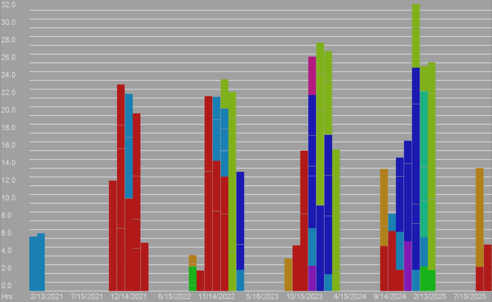
Planner page
Overview
The Planner page can be used to estimate the time needed for a planned track. The planned track can contain multiple GPX files, each representing a different section of the route, or different alternative routes. The estimation can be done with one of three methods: the Munter formula, the Naismith formula, or the TrackExplorer regression BETA.
The Munter formula requires values for distance, ascent/descent and Munter rates for the planned track(s). Distance and ascent/descent come from the GPX file(s); Munter rates can be set manually, or estimated on the basis of similar tracks.
The Naismith formula requires values for distance, ascent/descent, a base speed and penalties for uphill and downhill sections. The speed and penalties can be set manually, or estimated on the basis of similar tracks.
The TrackExplorer regression requires values for distance and ascent/descent for the planned track(s), which come from the GPX file(s). The regression coefficients are estimated on the basis of similar tracks.
Munter formula
The Munter formula calculates the track time as follows: time [hrs] = ( distance [km] + ascent [m] / 100 ) / rate. Distance and ascent come from the GPX file. Rates can be set manually if you know what they should be (based on your experience), or they can be estimated by TrackExplorer based on reference tracks. The selected reference tracks should be as similar as possible to the planned ones. The rate represents the difficulty of the track - a low rate is associated with a difficult (slower) track, whereas a high rate is associated with an easier (faster) track. The calculation is performed separately (with different rates) for the uphill, downhill and flat sections.
Naismith formula
The Naismith formula calculates the track time as follows: time = (distance * base speed) + (ascent * ascent penalty) + (descent * descent penalty). The descent penalty may be a positive or negative number; if negative, it's then a benefit instead of a penalty. Speed and penalties are expressed differently depending on the measurement system you are using:
US standard system: time [hrs] = (distance [mi] / 3 * base speed [hrs per 3 miles]) + (ascent [ft] / 2000 * ascent penalty [hrs per 2000']) + (descent [ft] / 2000 * descent penalty [hrs per 2000'])
The default values are: base speed = 1 hr per 3 miles; ascent penalty: 1 hr per 2000'; descent penalty: -0.5 hr per 2000'
Metric system: time [min] = (distance [km] * base speed [min per km]) + (ascent [m] / 10 * ascent penalty [min per 10m]) + (descent [m] / 10 * descent penalty [m per 10m])
The default values are: base speed: 12 min per km; ascent penalty: 10 min per 10m; descent penalty: -0.5 min per 10m
Because the speeds and penalties are not exactly equivalent, using the US standard and Metric formulas won't yield exactly the same results. However, especially for hiking activities, they should generally be close enough. The advantage is that the numbers used are simple and easy to remember even while on the field.
For the calculation, distance, ascent, and descent come from the GPX file.
Speeds and penalties can be set manually if tou know what they should be (based on your experience), but TrackExplorer provides the defaults indicated above. Alternatively, they can be estimated by TrackExplorer based on refrence tracks. The selected reference tracks should be as similar as possible to the planned ones.
TrackExplorer multiple regression BETA
The multiple regression method calculates the track time as follows: time [hrs] = (uphill distance [km] * p1) + (downhill distance [km] * p2) + (flat distance [km] * p3) + (ascent [m] * p4) + (descent [m] * p5). Distances, ascent and descent come from the GPX file. The regression coefficients p1, p2, p3, p4, and p5 can be estimated by TrackExplorer with a linear regression applied to the data from reference tracks. The calculation can't run with less than 5 reference tracks, but at least 50 are recommended.
The selected reference tracks should be as similar as possible to the planned ones. The regression parameters can't be set manually, unlike the Munter rates.
Obtaining the time estimates
To obtain the time estimates, follow the steps on the page. Note that some of the steps will be different depending on the estimation method you select.
#1 - confirm the planned tracks data
There is a list of the GPX files included in the plan. Depending on how the files were built, they may not have complete or accurate information (especially for ascent/descent). Update the missing or incorrect data.
#2 - select the estimation method
You can select the algorithm (Munter, Naismith, TrackExplorer regression), and the way the parameters are provided (manually, or estimated from reference tracks).
#3 with manually entered parameters - enter the formula parameters
Enter the parameters (rates or speed/penalties) for each planned track.
#4 with manually entered parameters - get the time estimates
See the summary of time estimates. Expand the Estimation notes section to review the parameters or errors.
#3 with estimated parameters - select the planned tracks
Select one or more planned tracks. Select more than one if you think that they all can be estimated with the same parameters. You can come back to this step multiple times and select different planned tracks.
#4 with estimated parameters - select the reference tracks
Select the reference tracks. Use the dropdown box at the top to use views to filter the list.
The reference tracks should be similar to the planned track(s) you selected. You should select as many reference tracks as possible, but at least 3 are required for the Naismith formula, and 5 are required for the TrackExplorer regression. These minimum numbers are merely technical and do not imply that 3 and 5 are sufficient for a good estimate.
#5 with estimated parameters - evaluate the quality of the reference tracks selection
For each metric, you can see the minimum, maximum and average value for the reference tracks. These values are also displayed in the Range column as in the example below:
Here is how to interpret the graphical elements:
Light blue shaded area: the range between minimum and maximum for the reference tracks
Blue line: the average for the reference tracks
Green dots: the values for the selected planned tracks
Orange dots: the values for the other planned tracks
Examine these data carefully to assess whether the reference tracks that you selected are appropriate to estimate the planned tracks. For example, in the screenshot above you can see that the reference tracks are longer than any of the planned tracks. This might make sense if two of the planned tracks are not alternative routes, but different sections of the same overall route.
TrackExplorer provides some warnings if the reference tracks appear to have values that are too disparate, but you must assess for yourself whether the reference tracks are appropriate
#6 with estimated parameters - review the estimated rates or parameters
The rates (Munter), speeds/penalties (Naismith) and coefficients (TrackExplorer regression) are displayed in a table for your reference. If any values are invalid (for example if the base speed is negative) it will be indicated here. In this case, select better reference tracks and start over.
#7 with estimated parameters - get the time estimates
See the summary of time estimates. Expand the Estimation notes section to review the parameters or errors.
Warning: The quality of the estimation is only as good as your manual estimate of the Munter rates or Naismith speed and penalties, the data recorded in the reference tracks, and how appropriately you selected the reference tracks. All of these are subject to large uncertainty and errors. You must consider the results very conservatively.
Compare tracks page
This page shows a table with all selected tracks and their performance data, such as distances, times, elevations, speeds, etc.
Double-click on a column header to sort by that column; double-click again to invert the sort order. When you select a row, it expands to show the non-numeric data, such as Activity, Description, etc. You can select multiple rows by holding the Control key while clicking on them. To deselect a row, hold the Control key while clicking on it again.
GPX data page
Overview and general
This page offers functionality to edit the GPX files for the first selected track. The available options are: View, File history, Trim, Combine, Adjust elevation, Delete ski lifts by distance, Delete ski lifts by elevation gain, and Adjust time outliers.
When you save the file after editing, it's recommended to save it with a different name, so you can always revert to the original one if needed. These tools allow you to choose whether to recalculate the performance data, or keep the original. Make the decision on the basis of the type of changes that you made, and whether they would lead to more accurate data or not.
View
Shows a list of all track segments in the file, with the sequence number, distance, duration and elevation gain, starting coordinates and starting date/time. You can filter the segments based on distance, duration, elevation and elevation gain. You can also sort the segments based on the same fields, or the sequence.
File history
Shows all the operations performed by TrackExplorer to the GPX file. This includes the type of operation and the values of the parameters used. Operations performed by other tools are not shown, unless they use the same standard to record the data. This data in the file may not be readable by other tools.
Trim
Identify a specific point in the tracks, then delete all points either before or after the selected point. When you save, you can choose to recalculate all performance data based on the updated file.
Combine
Combine the GPX file of the selected track with a new one. There are two operations available: Join and Blend.
Join
This operation connects the tracks one after the other. For example, the activity may have been interrupted overnight, you ended up with separate tracks and you want to put them back together. TrackExplorer can determine the correct order of the tracks based on the date/time of each, or you can manually select to place the new track before or after the original. You can also manually set the time elapsed between the end of the first track and the beginning of the second.
Blend
This operation matches the two tracks by time, and calculates the average coordinates and elevation at each point in time. The average of the two tracks may be more accurate than one of them, the effect of random errors may be reduced, and the resulting map and profile may be smoother. The requirement is that the two tracks must have consistent locations and times (i.e. they must have been recorded by devices that were in the same places at the same times).
If one or both of the files contain multiple sections (for example if the "Delete ski lifts by distance" function was previously applied), they will be combined into a single <trk> in the averaged file. In this scenario it would be preferable to apply the average before deleting the ski lifts.
See an example below:
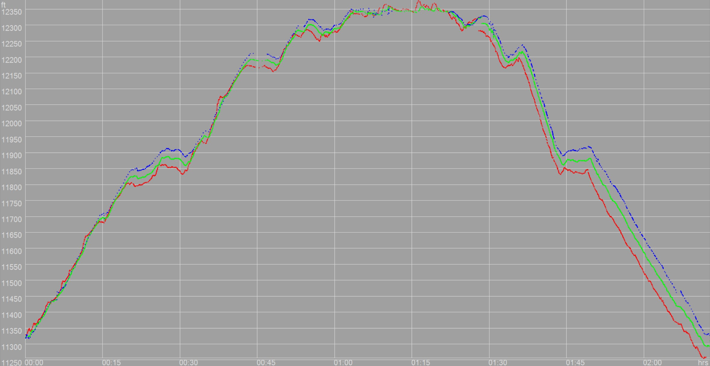
A section of two tracks recorded by different devices (one red and one blue), and the averaged track (green).
1 / 2
Adjust elevation
The elevation data from the GPS device may sometimes be noisy or otherwise inaccurate, which leads to a misestimation of the values for ascent, descent, uphill time and distance, downhill time and distance and flat time and distance. There are several methods available to adjust the elevation values. Each method may be appropriate for different circumstances:
Decimation: simply removes a set proportion of the elevation points
Known values: recalculates the elevations based on otherwise known elevation values for the particular track
Local replacement with interpolation: replaces elevation values in a specific segment of the track
Moving average: replaces the original elevations with the moving average of the previous ones
Savitzky-Golay filter: similar to the previous, replaces the original elevations with an interpolation of the previous ones
Threshold: eliminates elevation changes beyond a certain threshold
USGS dataEXT: replaces elevation values with data obtained from the USGS. The availability of this service may change in time.
Decimation
Preserves the elevation data for the specified fraction of the coordinate points. The elevations of the other points are replaced with linearly interpolated values. Consider this method if the elevation data is too jittery. For example, a factor of 3 means that 1/3 of the elevations will be preserved.
Known values
Recalculates all elevation data based on known values (start and end elevation, high or low elevation, ascent and descent). The calculation is performed separately on the first part of the track (from the start to the first low/high point) and the second (from the first low/high point to the end). The new values are calculated such that the following constraints are always respected:
The relative size of the elevation difference between points is preserved from the original file
Consider this method if you have valid known values for the relevant points and you want to preserve from the original file the relative changes in between. Depending on the general shape of the track, only the high or low elevation is required. If the track goes up and then down (e.g. a hike up a mountain), the high elevation is required. If the track goes down and then up (e.g. a hike down a canyon), the low elevation is required. The known start/end/high/low elevation values can be entered manually or retrieved from the USGS (this is an external service that may not continue to be available). The known ascent/descent values must be entered manually.
Local replacement with interpolation
Adjusts the elevation of the points within the selected window. The new elevations are calculated by interpolating the elevations of the first and last points within the window.
Two types of interpolation are available: Polynomial and Constant slope. The latter simply calculates the slope between the average elevation of the first points and the average elevation of the last ones. The result using the Constant slope interpolation will generally be very similar to that of the Polynomial interpolation with order 1.
Consider this method if only partial segments of the track have poor quality data, perhaps due to equipment malfunction or environmental adverse conditions such as wind affecting the sensor.
To select the window, specify the starting point and the width using the sliders or entering values in the respective fields (the values are expressed in pixels as displayed in the chart on the right). The selected window is highlighted in the elevation chart.
Use the Interpolation type toggle to switch between Polynomial and Constant slope.
Use the Reference points number box to specify the number of points (at the beginning and end of the window) used for the interpolation.
For Polynomial interpolation, enter the order in the Polynomial order number box. The order must be between 0 and 3.
If you want to correct multiple segments of the track, set the window and other parameters, click the Apply & keep button, then move the window and repeat as many times as needed. Use the Apply once button for a single correction.
Moving average
Replaces each point's elevation with the average of the elevations from the given number of previous and successive points. Consider this method if you want to smooth out any spikes. For example, a setting of 4 points means that each point's elevation will be replaced by the average of the elevations of the previous 4 and successive 4 points: 8 in total.
Savitzky-Golay filter
Replaces each point's elevation with an interpolation of the elevations from the given number of previous and successive points. The interpolation is based on a polynomial regression of the indicated order. Consider this method if you want to smooth out any spikes. For example, a window size of 4 points with a polynomial order of 3 means that for each point in the curve, a polynomial function of order 3 will be fit to the segment starting 4 points before and ending 4 points after each point (9 points total). The coefficients of this function will then be used to recalculate the point's elevation. The maximum supprted order is 3.
Threshold filter
Eliminates the elevation changes between successive points that are smaller than the given threshold. Consider this method if you see large elevation changes that are spurious. For example, if you set the threshold to 5, any elevation change larger than 5 will be replaced by 5.
USGS data EXT
Divides the track in the specified number of segments. For each segment, the original elevations of 3 consecutive points in the middle are compared to the USGS elevations of the same 3 points, calculating an adjustment ratio (USGS elevation / original elevation).
The same adjustment ratio is then applied to all points in that segment.
The USGS elevations are retrieved using the Elevation Point Query Service by the USGS (United States Geological Survey).
You can find more information about the Elevation Point Query Service at https://apps.nationalmap.gov/epqs/". This is an external service that may not continue to be available.
Consider this method if the relative elevation changes are correct, but the overall profile is off.
For example, if the original elevation is 2000 and the USGS elevation is 2100, the ratio is 1.05. The elevation of all points in the segment is multiplied by 1.05.
This function requires Internet connectivity and is limited to a maximum of 10 segments. The processing time for each point is 10 seconds or more. If the elevation of a point can't be retrieved, that point is ignored.
Reviewing elevation changes
The table on the left and the chart on the right show the original data in red, and the adjusted data in blue.
After one of the adjustment methods has been applied, compare the red and blue data to see if the results are satisfactory.
The performance values will be recalculated based on the adjusted data. In some cases, you may want to save the original value. The last column in the table allows you to decide if you want to save the original or adjusted value.
When you save the file, you may check the Data is verified box if you think that the data is now accurate.
Example
In this example, the track has been adjusted with the default settings of the Savitzky-Golay filter. The elevation profile has been smoothed, and as a result, some of the performance values have changed substantially. The user has the option to save the original values or the adjusted ones.
Delete ski lifts by distance
Some GPS devices recognize when you are riding a ski lift and will only record the first and last point of the ride. This results in long, straight segments, as illustrated in the examples below:
This is a partial view of 23 unmodified tracks exported from a GPS device. The lift ride sections overlap each other and the tracks, and make it hard to see clearly all the tracks. The total distance is 920 miles (includes the lift rides).
1 / 4
In these cases it may be preferable to hide these sections, and not include them in the calculations for the performance data. You can use this tool to identify and delete these very long segments.
First, use the slider to identify the most likely candidates. In the example below, you can clearly see that 16 segments are much longer than the others. They are likely to be what we are looking for. Use the slider to set a threshold that will isolate them (roughly 2,500 feet).
The 16 segments are now listed below. Select each of them to confirm that they are lift rides - you can establish that looking at the map, the elevation gain and the duration.
Select the segments that you want to delete and confirm.
Check the "Collapse times" checkbox to zero out the elapsed times of the deleted segments. This affects how the track is displayed in the Profiles page: The red line is the profile of the original track; the blue line is the same track with distance outliers deleted and times collapsed. The chart shows elevation by time. In the adjusted track, the time elapsed during the deleted segments has been removed. In the original, it's still visible.
Check the "Update number of runs" checkbox to update the "Laps/runs" field with the number of segments obtained after deleting the selected segments.
Delete ski lifts by elevation gain
Other GPS devices keep saving track points even while riding a ski lift. If you still want to be able to remove these sections, you can use this tool. You can identify the correct sections using three parameters:
Minimum uphill distance
Minimum ascent
Maximum downhill distance
TrackExplorer goes through all the points in the track and keeps count of the cumulated uphill distance and ascent, and downhill distance; as soon as both minimums are reached, without passing the maximum, it flags the corresponding points. Once the maximum is hot, it starts over.
The sections that were identified are displayed in the table and when selected can be viewed in the map. Confirm which sections you want to delete and select them.
Check the "Update number of runs" checkbox to update the "Laps/runs" field with the number of segments obtained after deleting the selected sections.
Adjust time outliers
This tool allows you to delete any long breaks found in the track.
The table shows a list of points, sorted by duration. Select the ones that you want to edit, and enter the new duration that you want to apply - the new duration may be 0. All the selected points will be updated accordingly.
Edit tracks page
This page allows you to mass update some of the data on multiple tracks at the same time (all selected tracks). This is much faster than editing tracks one by one. It's recommended to run a backup before using these tools. The Operation result box at the bottom of the page tells you how many tracks were successfully updated.
Update text fields
Select the text field that you want to update, and enter the update command. There are commands available to: append text at the end, insert text at the beginning, remove text, replace text, overwrite the field, and clear the field. You can optionally test the command on a specific track. Do this to make sure that the command will behave as expected. When you are ready, press the Update button to update all selected tracks.
Recalculate performance data fields from the GPX file
Use this if any of the performance values have been manually updated incorrectly and you want to refresh them. Select the field(s) that you want to recalculate, and choose if and how you want to reset the Data is verified box; then press the Recalculate button. TrackExplorer reads all GPX files for all selected tracks and updates the performance data accordingly.
Convert images
HEIC images may present performance issues on some PCs. If you are facing this problem, and you have multiple hero images in HEIC format, this can negatively affect your experience in the Tracks page. Use this tool to convert all hero images for the selected tracks from HEIC to JPEG. You can optionally delete the original files.
Views page
Overview
Views are a way to dynamically define a set of tracks that will be displayed on the Tracks page. They consist of filters that can be applied to any of the track fields, plus additional options that control how the tracks are displayed in the Tracks, Map and Profiles pages.
When you open the page, select whether you want to create a new view or edit an existing one. When you create a new view, enter the name first. In the name you can use slashes ( / ) to create a folder structure for your views. When you look for views in the Tracks page, they are shown in a tree following this folder structure. Each criterion is enabled by a checkbox; you can enter values without ticking the checkbox, but in that case the criterion will not be applied. The view returns all tracks that match all of the enabled criteria. In other words, there is a logical AND operation applied to all criteria. For more complex logic, you can use combined views.
Filters
Filters are grouped in the following sections: by attribute (using track status, availability of GPS and elevation data, availability of image), by group (using activity, gear, location, people, collection and tag), by date (date range, recent dates, season), by performance (any range of values for most of the performance fields), by text (against all fields, or name, or description), by custom fields, and specific tracks (you can create the view to include specific tracks without having to enter any other criteria).
When filtering by activity, gear, and location, you can specify individual values or any text.
For groups that can be defined in a folder structure (location and gear), you can set the filter for a specific item, or for a full folder. For example, say that you have three tracks with the following location paths: "Italy/North/Dolomites", "Italy/North/Valtellina" and "Italy/North/Val d'Aosta"; if you create a filter selectiing the partial location path "Italy/North/", this filter will match all three tracks.
When filtering by date, you can specify a date range and make it valid for a specific year or for any year. You can also select the last arbitrary number of days, weeks, months, seasons, ski seasons, or years starting from the current date.
When filtering by numerical fields, leave the "to" value set to 0 to have no upper bound, and leave the "from" value set to 0 to have no lower bound.
When filtering by name or description, you have the option to match the full text, the start, the end, or any part of the text.
Options
The options are used when you have a view selected in the Tracks page, to control the way the app behaves:
in the Tracks (Home) page itself (select the tracks, image size, and colors; you can also set the view as default)
navigating to the Profiles page (chart type, elevation display, etc.)
navigating to the Map page (map type, colors, etc.)
navigating to the History page (Y axis, X axis, colors, etc.)
Sort
Select the field and direction for sorting the tracks.
Combined views
You can combine the current view with one or more other views, as follows:
apply intersection (find tracks that match the current view and also all other selected views)
apply union (find tracks that match the current view or any of the other selected views)
apply subtraction (find tracks that match the current view but do not match any of the other selected views)
For example:
If you have a view for Hiking activities and a view for Cycling activities and you apply the Union combination, the result will include both hiking and cycling tracks.
If you have a view for Hiking activities and a view for the state of Colorado and you apply the Intersection combination, the result will include only hiking activities in Colorado (no hiking in other states or cycling in Colorado).
If you have a view for slow activities and you apply it with the Subtraction combination to the Hiking view, the result will include only hiking activies that were not slow.
You can apply multiple combinations at the same time: for example, Intersection of hiking and Colorado, Union of biking, and Subtraction of slow activities: the result will include activities in Colorado and cycling activities anywhere that were not slow.
Buttons
Delete: in edit mode, deletes the selected view
Save: in create mode, saves the new view; in edit mode, saves the changes to the existing view
Save as new: in edit mode, saves the selected view as a new one
Apply: opens the view in the Home page, whether it was first saved or not
Technical information
Backups and the main TrackExplorer files
From the Settings page, you can back up the data on the fly, schedule an automatic recurring backup, and restore data from a previous backup. The files and folders that are saved in the backup include:
TrackExplorerData.txt (contains all track data)
TrackExplorerFilters.txt (contains all saved views data)
TrackExplorerLinks.txt (contains the links associated to each track)
TrackExplorerRelations.txt (contains information about track collections)
TrackExplorerSettings.txt (contains the settings for the custom fields)
HeroImages folder (contains the hero images created from the tracks' maps)
When the files are backed up, the "txt" extensions are replaced by "bak". You should never edit these files manually, as they are likely to become corrupt. However, you may back them up yourself and replace them if needed (before opening the app). Note that the backup process does not save any of the demo files, even if they have been modified.
GPX extensions
TrackExplorer reads and writes standard GPX files with TrackExplorer extensions, but does not read or save other extensions (such as, for example, heart rate information). The TrackExplorer GPX extensions are:
Within GPX / metadata: history tag, containing a list of record, each with a sequence attribute and containing operation and parameters
Within GPX / trk / trkseg / trkpt: elapsed tag, containing a timespan object. This represents the elapsed time from the beginning of the track and it's updated when you modify the file to compress times (for example in the Delete ski lifts tools or the Adjust time outliers tool). This allows for the preservation of the original date/time data while supporting the compressed times.
Sharing BETA
Web pages
Each page consists of the following:
one html file with a user-selected name and the extension ".htm"
one folder with the same name and the suffix "-img". This folder contains all image files needed for the page (at full resolution), various image files used for the favicon, and the track's GPX file (if you chose to include it).
Netlify EXT
When you publish a page to Netlify, the files are saved in a folder called Publish inside your TrackExplorer main folder before they are uploaded to Netlify. This is a mirror of your Netlify site. Every time you publish a new page, or manually select the Sync option in the Sharing page, all files within the Publish folder are deployed to Netlify. Only the new, deleted or edited files are actually updated, but it's important to note that ALL files in that folder will be synced - not only the ones related to the last created page.
Units of measure
When you save a track, the performance data will be saved in the file using the units (USCS or Metric) selected for display at that point in time.
For example: you create a track with Metric selected - the distance is saved in Km. You then switch to USCS and edit/save the track: the distance is now saved in Mi.
This only affects the data file: regardless of the unit used when saving the file, all data is always shown in the unit selected for display.
About TrackExplorer
TrackExplorer 1.0
TrackExplorer allows you to collect, organize, display, analyze, compare and plan your activities based on GPX files.
 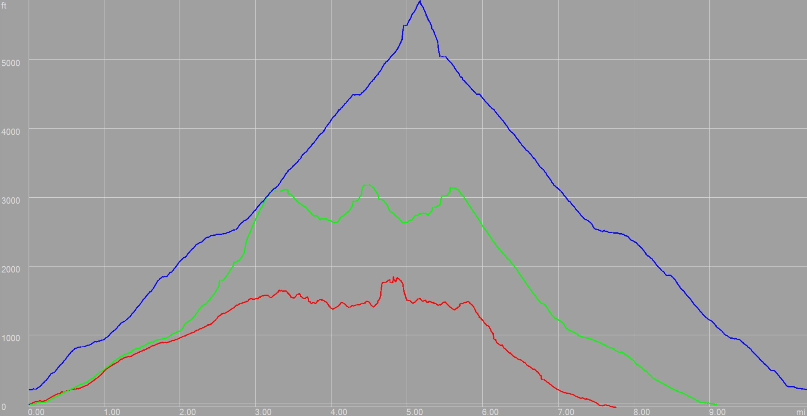
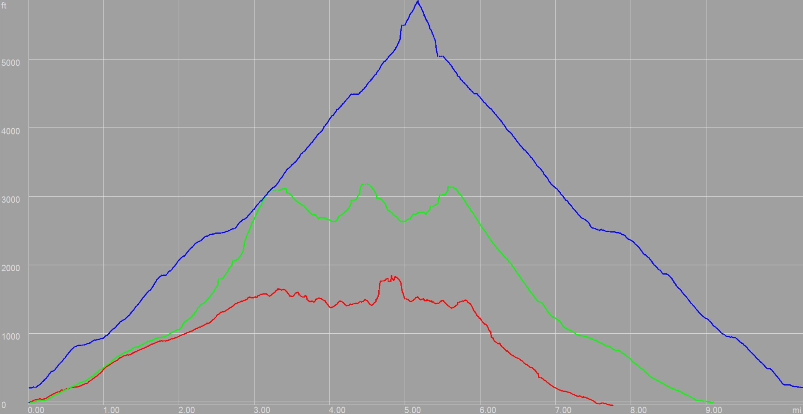


 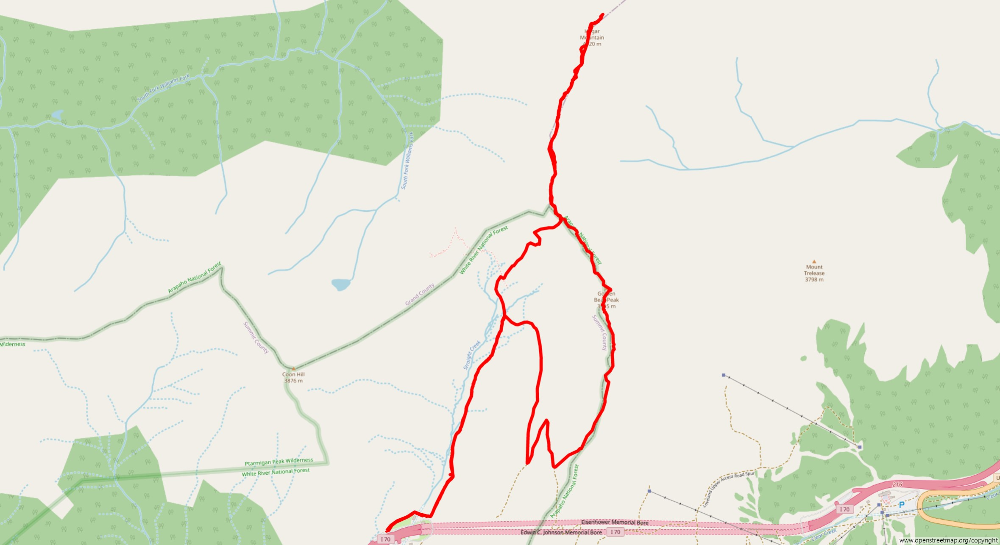
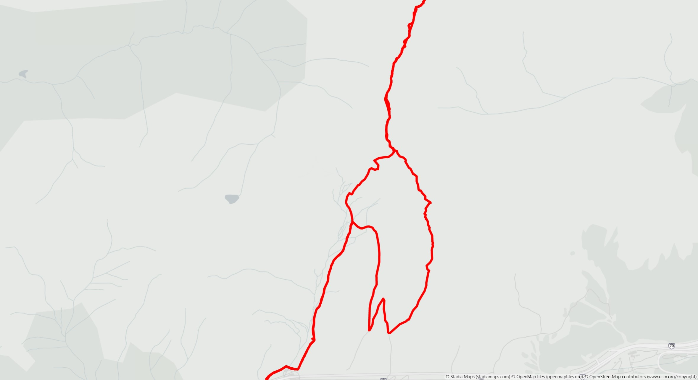
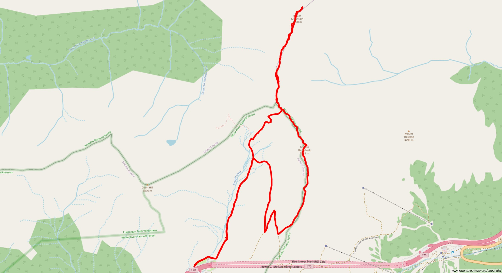
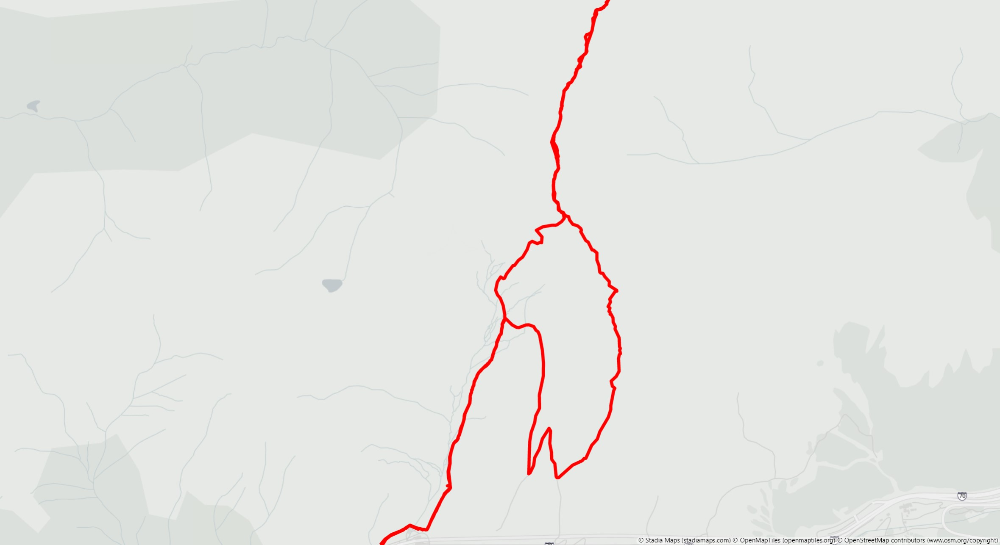


 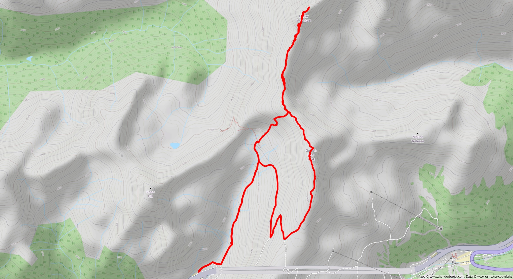
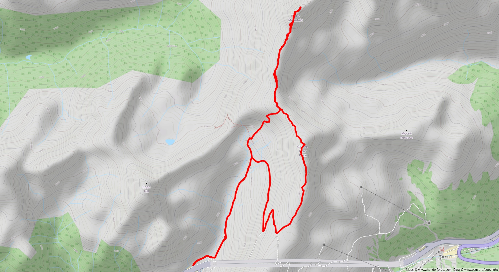


 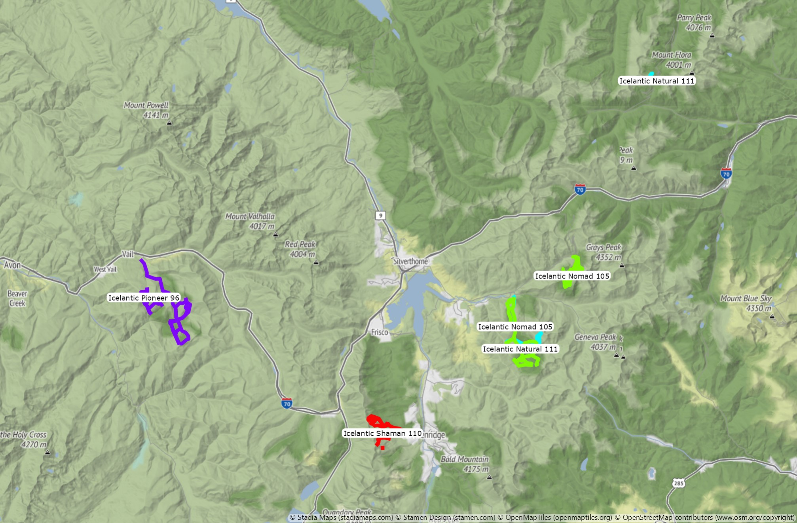
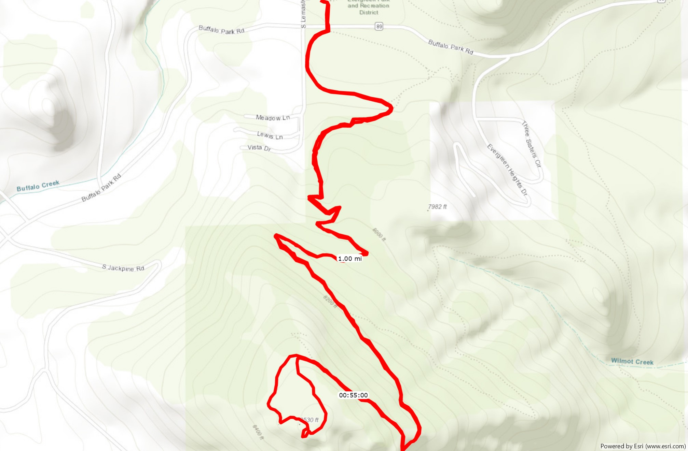
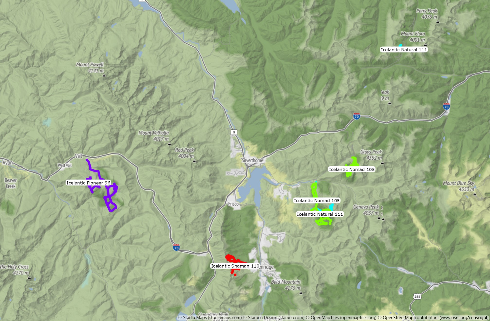
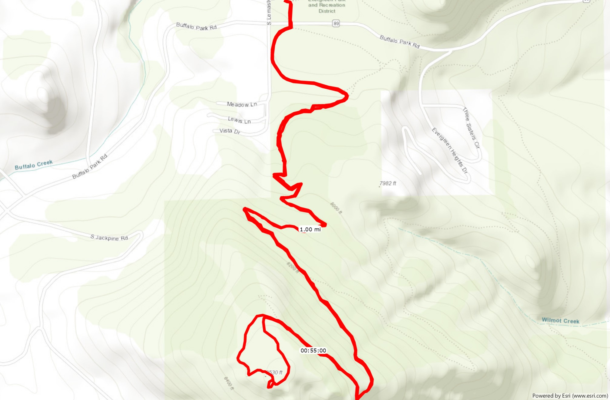


 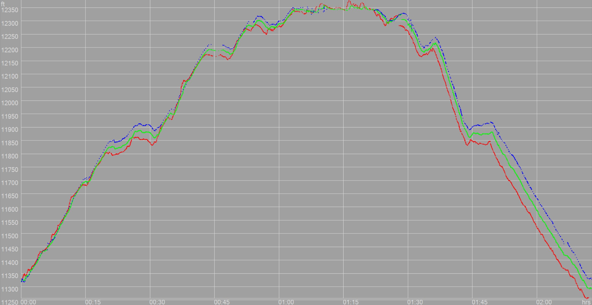
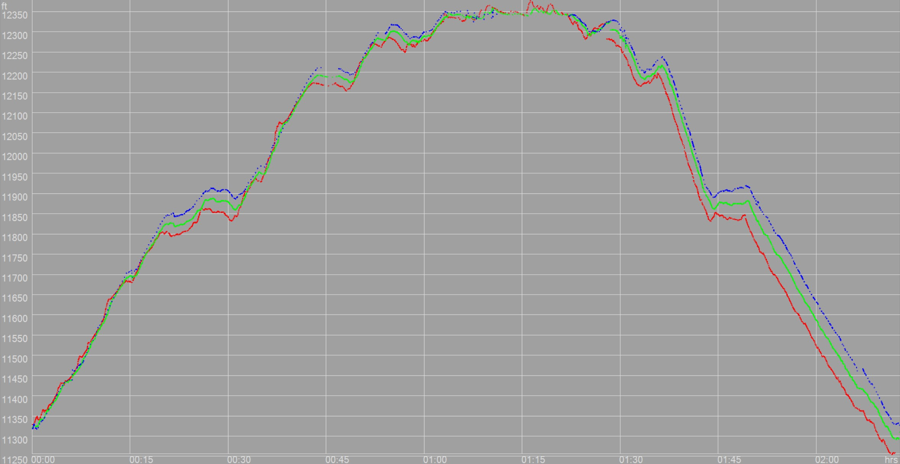